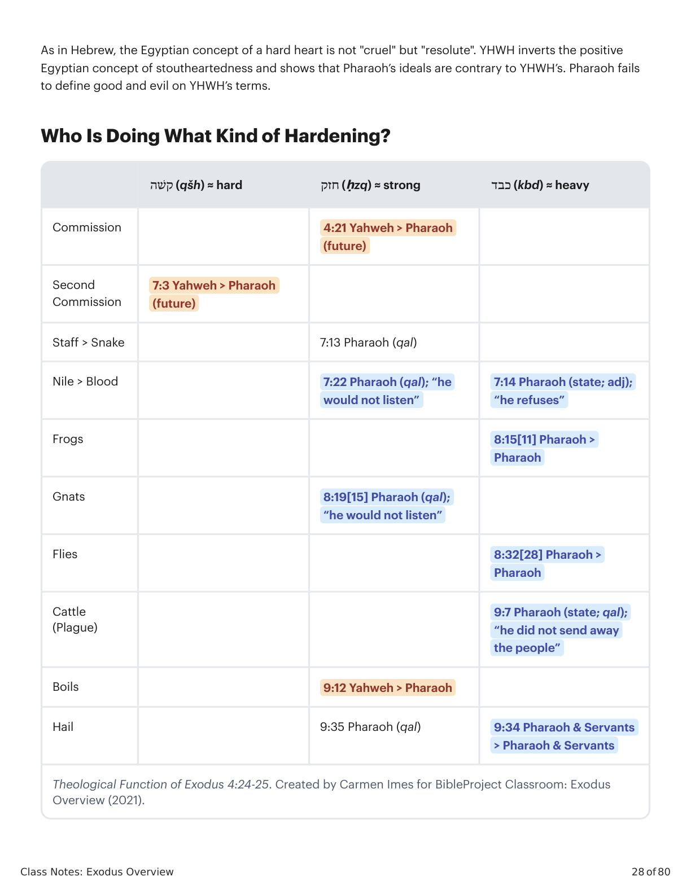
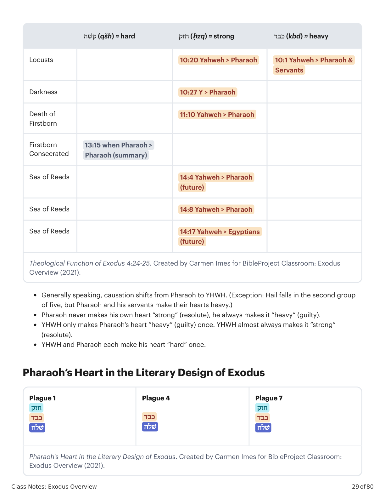
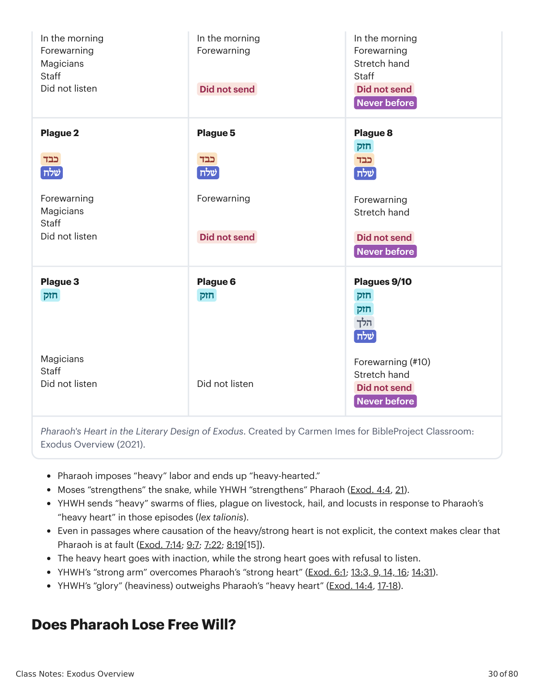

Sessão 9: Coração EndurecidoSession 9: Hard Heart
Class Notes: Exodus Overview
27 of 80
Session 9: Hard Heart
Key Takeaways
Pharaoh's heart is described in two ways: heavy, implying that he was guilty of injustice, and hard,
meaning “resolute.”
God knew Pharaoh would resist, but he gave him many chances. Pharaoh’s evil reaches a point of no
return, so God bends Pharaoh’s evil to his purposes and lures him into his own destruction.
Pharaoh’s Heart: Two Views
Heavy Heart = Guilty
YHWH co-opts an Egyptian concept expressed in the Book of the Dead where the gods weigh a dead person’s
heart on a balance against a feather. A heart heavier than the feather is guilty of injustice. YHWH finds
Pharaoh guilty by his own standards.
Papyrus of Hunefer (1275 B.C.E.). Wikimedia.
“Judgment scene from the Book of the Dead. In the three scenes from the Book of the Dead (version from
1275 B.C.E.) the dead man (Hunefer) is taken into the judgment hall by the jackal-headed Anubis. The next
scene is the weighing of his heart, with Ammut awaiting the result and Thoth recording. Next, the triumphant
Hunefer, having passed the test, is presented by the falcon-headed Horus to Osiris, seated in his shrine with
Isis and Nephthys” (British Museum).
Hard Heart = Resolute
Class Notes: Exodus Overview
28 of 80
As in Hebrew, the Egyptian concept of a hard heart is not "cruel" but "resolute". YHWH inverts the positive
Egyptian concept of stoutheartedness and shows that Pharaoh’s ideals are contrary to YHWH’s. Pharaoh fails
to define good and evil on YHWH’s terms.
Who Is Doing What Kind of Hardening?
קׁשה (qšh) ≈ hardחזק (ḥzq) ≈ strongכבד (kbd) ≈ heavy
Commission
4:21 Yahweh > Pharaoh
(future)
Second
Commission
7:3 Yahweh > Pharaoh
(future)
Staff > Snake
7:13 Pharaoh (qal)
Nile > Blood
7:22 Pharaoh (qal); “he
would not listen”
7:14 Pharaoh (state; adj);
“he refuses”
Frogs
8:15[11] Pharaoh >
Pharaoh
Gnats
8:19[15] Pharaoh (qal);
“he would not listen”
Flies
8:32[28] Pharaoh >
Pharaoh
Cattle
(Plague)
9:7 Pharaoh (state; qal);
“he did not send away
the people”
Boils
9:12 Yahweh > Pharaoh
Hail
9:35 Pharaoh (qal)
9:34 Pharaoh & Servants
> Pharaoh & Servants
Theological Function of Exodus 4:24-25. Created by Carmen Imes for BibleProject Classroom: Exodus
Overview (2021).

�Êxodo X:Y. Tradução e Design Literário por Tim Mackie para BibleProject Classroom: José (2021).Exodus X:Y. Translation and Literary Design by Tim Mackie for BibleProject Classroom: Joseph (2021).
Class Notes: Exodus Overview
29 of 80
קׁשה (qšh) ≈ hardחזק (ḥzq) ≈ strongכבד (kbd) ≈ heavy
Locusts
10:20 Yahweh > Pharaoh
10:1 Yahweh > Pharaoh &
Servants
Darkness
10:27 Y > Pharaoh
Death of
Firstborn
11:10 Yahweh > Pharaoh
Firstborn
Consecrated
13:15 when Pharaoh >
Pharaoh (summary)
Sea of Reeds
14:4 Yahweh > Pharaoh
(future)
Sea of Reeds
14:8 Yahweh > Pharaoh
Sea of Reeds
14:17 Yahweh > Egyptians
(future)
Theological Function of Exodus 4:24-25. Created by Carmen Imes for BibleProject Classroom: Exodus
Overview (2021).
Generally speaking, causation shifts from Pharaoh to YHWH. (Exception: Hail falls in the second group
of five, but Pharaoh and his servants make their hearts heavy.)
Pharaoh never makes his own heart “strong” (resolute), he always makes it “heavy” (guilty).
YHWH only makes Pharaoh’s heart “heavy” (guilty) once. YHWH almost always makes it “strong”
(resolute).
YHWH and Pharaoh each make his heart “hard” once.
Pharaoh’s Heart in the Literary Design of Exodus
Plague 1
חזק
כבד
ׁשלח
Plague 4
כבד
ׁשלח
Plague 7
חזק
כבד
ׁשלח
Pharaoh's Heart in the Literary Design of Exodus. Created by Carmen Imes for BibleProject Classroom:
Exodus Overview (2021).

�Êxodo X:Y. Tradução e Design Literário por Tim Mackie para BibleProject Classroom: José (2021).Exodus X:Y. Translation and Literary Design by Tim Mackie for BibleProject Classroom: Joseph (2021).
Class Notes: Exodus Overview
30 of 80
In the morning
Forewarning
Magicians
Staff
Did not listen
In the morning
Forewarning
Did not send
In the morning
Forewarning
Stretch hand
Staff
Did not send
Never before
Plague 2
כבד
ׁשלח
Forewarning
Magicians
Staff
Did not listen
Plague 5
כבד
ׁשלח
Forewarning
Did not send
Plague 8
חזק
כבד
ׁשלח
Forewarning
Stretch hand
Did not send
Never before
Plague 3
חזק
Magicians
Staff
Did not listen
Plague 6
חזק
Did not listen
Plagues 9/10
חזק
חזק
הלך
ׁשלח
Forewarning (#10)
Stretch hand
Did not send
Never before
Pharaoh's Heart in the Literary Design of Exodus. Created by Carmen Imes for BibleProject Classroom:
Exodus Overview (2021).
Pharaoh imposes “heavy” labor and ends up “heavy-hearted.”
Moses “strengthens” the snake, while YHWH “strengthens” Pharaoh (Exod. 4:4, 21).
YHWH sends “heavy” swarms of flies, plague on livestock, hail, and locusts in response to Pharaoh’s
“heavy heart” in those episodes (lex talionis).
Even in passages where causation of the heavy/strong heart is not explicit, the context makes clear that
Pharaoh is at fault (Exod. 7:14; 9:7; 7:22; 8:19[15]).
The heavy heart goes with inaction, while the strong heart goes with refusal to listen.
YHWH’s “strong arm” overcomes Pharaoh’s “strong heart” (Exod. 6:1; 13:3, 9, 14, 16; 14:31).
YHWH’s “glory” (heaviness) outweighs Pharaoh’s “heavy heart” (Exod. 14:4, 17-18).
Does Pharaoh Lose Free Will?

�Êxodo X:Y. Tradução e Design Literário por Tim Mackie para BibleProject Classroom: José (2021).Exodus X:Y. Translation and Literary Design by Tim Mackie for BibleProject Classroom: Joseph (2021).
Class Notes: Exodus Overview
31 of 80
“Exodus gives no sign that Pharaoh longed to submit to Yahweh as his sovereign and was prevented from
doing so; he received numerous rebukes, explanations, and commands that imply opportunity to submit.”
Coover-Cox, Dorian (2006). “The Hardening of Pharaoh’s Heart in Its Literary and Cultural Contexts.”
Bibliotheca Sacra. 163.
Reflection Question
Do you find any of the explanations from this session helpful in wrestling with God hardening Pharaoh’s heart?